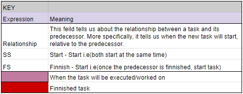
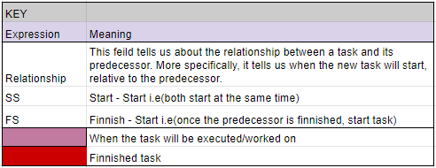

This blog will follow the creation of a supply chain logistics blockchain, the end result should demonstrate the power of blockchain technology in logistics and more specifically, in supply chains. This project is designed to be applied to a supply chain for baby formula.
Supply chain logistics refers to the detailed processes required to create and ship a product; supply chains are facilitated through a company, its suppliers, eventually the customer and any other potential essential members of the network.
In essence, a supply chain is the description of a network’s movement of supplies to a company - one or many - which then creates a product and ships it to an endpoint (i.e. a customer).
The current model of many supply chains are outdated and inefficient, here are a few of the major issues:
- Lack of transparency and effective communication can increase costs for later stages of a supply chain.
- This can be due to ineffective communication to a retailer about predicted sale of a product, meaning they may buy an incorrect amount of stock from a supplier.
- Lack of transparency about the delivery status of a product can create a cascading effect of wasted time for the whole supply chain.
- Documents and other important data can take too much time to circulate through the network, this is especially the case for documents addressed to the entire supply chain.
- Since there are many networks/supply chains in the world and one business may interact independently with many networks, there is great inefficiency in the format of data entry.
This project utilizes the integration of blockchain into a supply chain to smoothen a lot of these problems, blockchain integration enables:
- Adding ‘Blocks’ of information to the blockchain, which is accessible to the entire network and potentially the public as well; depending on the context of the supply chain.
- This grants transparency into all relevant information to all members of a network, such as:
- Delivery status, meaning no misunderstandings of time.
- Sales data and predictions.
- Integrity of a product.
- This functionality is important as it creates incredible potential for quick and accurate delivery. More specifically, it means a node is able to clearly see how much stock a supplier may have, make predictions about their own need for supplies and order from the supplier in advance. Of course, this can be done without a blockchain, however in this system, a smart contract can be instantly put in place, locking both nodes into an exchange of goods.
- This is especially great for granting trust and confidence throughout the network.
- Protection from data loss, since a decentralized network has a copy of the blockchain saved to each node, unless all members decide to delete the blockchain, all data is safe!
- Malicious nodes (people) are not able to edit past blocks, therefore the accuracy of the data is always as accurate as the node recording the data.
- The nature of a blockchain is to be completely transparent, because of this it is easy to see the makeup of a supply chain, specifically which parts of the supply chain are taking up the most time.
- Because of this, anyone who can view the blockchain (mainly admins) is able to see which parts of the supply chain can be streamlined, more or less making a supply chain into a self correcting ecosystem.
- Sharing files and documents with the network quickly and efficiently.
- This can mean that data like output predictions of curtain nodes can be easily made and quickly shared.
"Visibility unlocks efficiency, and trust unlocks visibility. ShipChain's unified approach to provide both opens up a world of potential for a siloed industry to be able to work together for the benefit of everyone."
Below is a diagram of the supply chain, at every node a new block is added to show the progress of the supply chain's product.
This project will continue to utilize the convenience of a gantt chart to track the timing of tasks and their completion for every progress entry.
 

Task Descriptions
1.0
Completing the Project Definition Document and Technical Documentation to a detailed and polished standard. The Project Definition Document aims to give a brief overveiw of the project as a whole including the production process. The Technical Document gives a precise description of the inner processes of the supply chain and its blockchain.
1.1
The blog web-app is the one you’re reading from right now! This task was to finnish the entire frontend to a very polished standard, with full backend funtionality.
1.2
This task requires that this blog post be complete to a high level of detail containing an overveiw of the project.
2.0
Initial blockchain development assumes that the base functionality of the blockchain is complete, meaning a consensus algorithm, and propper block data validation.
2.1
Peripheral blockchain development means propper infrastructure to specifically support the supply chain, this should inculde file transfer across the network, propper support for individual nodes and an input method.
2.2
This task requires that the blog post be complete to a high level of detail, containg information about the last 2 weeks of production, i.e, the problems face and the solutions put in place.
3.0
This task requires that a webapp (preferably this one) is able to propperly communicate with the blockchain to create new blocks and preform other vital tasks. As of right now, this task is outside of the scope of the prototype due in week 8, however I hope to create a functioning version of it so that the prototype is able to better demonstrate the blockchains capabilities.
3.1
This task requires that the blog post be complete to a high level of detail, containg information about the last 2 weeks of production, i.e, the problems face and the solutions put in place.
3.2 - 3.3
Fleshed out functionality really means cleanup, this task aims to polish every aspect of the webapp to the best possible quality. This is acheivable due to the fact that this task can be worked on during the 2 week break between week 10 and week 11.
3.4
This task requires that the blog post be complete to a high level of detail, containg information about the last 2 weeks of production, i.e, the problems face and the solutions put in place.
3.5
This task is adding to what I mentioned previously, execpt with a more broad scope, including the overall user experience and flow of movement through the facilities of the project.
4.0
This task requires that the blog post be complete to a high level of detail, containg information about the last 2 weeks of production, i.e, the problems face and the solutions put in place.
4.1
This task requires a well prepared presentation which engages and informs the audience to the highest potential, There must also be some live demonstration of the supply chain to propperly show the capabilities of the blockchain.
4.2
This task requires that the blog post be complete to a high level of detail, containg information about the last 2 weeks of production, i.e, the problems face and the solutions put in place. This will also be the final blog post and so it should give a detailed overveiw of the entire project over the course of the last 16 weeks.
30/7/21
Starting today, I will be migrating the over-technical explanation of my blockchain from the ”PDD” over to the “Technical Documentation”. I plan to first flesh out this technical document to get a good idea of what role my blockchain will play in a supply chain, and to then give a proper overview in the PDD.
Also as of today, I will be trying to put as much of this project onto google drive as possible to mitigate the risk of data loss and allow seamless collaboration with my tutor.
4/8/21
As of today, the technical document has roughly 2000 words, I feel as if the decision to create such a document was very beneficial as i now have a very fleshed out idea of how this blockchain is going to operate and be implemented.
From here, to finnish up the technical document i would like to work on:
- Finishing the outline of all the node’s roles.
- Sorting out the proof of stake situation; as I’m not exactly sure how proof of stake works at the moment, so writing up the method in the technical documentation will be vital.
- Describe the webapp and its use in this project
- I want such a webapp to be the interface to interact with the blockchain.
Once the technical document is done, I will create a web hosted blog (the one you’re currently reading), I eventually want the blog to be on the blockchain’s webapp. Then I will finnish up the project definition document and start building the base blockchain.
6/8/21
As of tonight, the landing page of the webapp and progress entry showcase have been completed. I have made many adjustments to the CSS and HTML to get the webpage looking nice with the necessary information.
On top of this, I wrote JavaScript to generate the progress entry tiles instead of hard coding HTML, I mainly did this so that in future it will be much easier to add progress entries as I continue to work on the project. Writing the JS wasn't necessarily hard, but more tedious, this isn't surprising considering we are creating complex DOM elements with raw JS, in hindsight I should have definitely used JQuery to save me some time and make the script elegant.
7/8/21
Little progress has been made on the technical document as I have decided to put it on the backburner while I get the progress weppage up and running. This afternoon I set up google docs to automatically sync with the HTML and CSS files on my laptop. So we are ready to start the web development of this blog without fear of data loss.
As far as front end design goes, I have found a few nice html/css templates for certain functionalities, i place to then use bootstrap (a css library) to fill in the spaces.
8/8/21
Today is the last day I am able to work on this progress entry so I will be giving an overview of this month's work. I think that overall, I am very happy with all of the infrastructure that i have created around this project like the google drive’s file organization, numerous progress tracking documents, a good base for the webapp and an extensive technical document.
There haven't been many challenges because of the nature of the work that I am doing, but with that being said, it’s still very important work, as it fleshes out the overall idea of the project.
After this week, we are in a good place to start working on the actual blockchain after the finishing touches are put on the technical document. I am currently behind schedule as i planned to have this technical document finished today, but I believe that once blockchain production starts, things will move more quickly. The rough blockchain development schedule is fairly generous, time wise so I expect to make up the time on it to get back on schedule.
I look forward to continuing to add these progress entries and building a really nice final product. If you have any questions, feel free to contact me through the website!